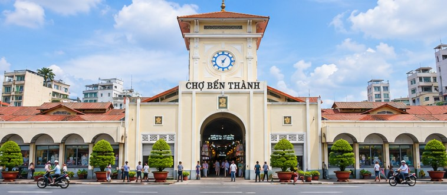

Điểm đến gợi ý
Ba địa danh giữa trung tâm TP.HCM. Chọn một địa điểm để xem thử cách đặt trạm đến.

Dinh Độc Lập
Khoảng sân rộng và mặt đứng nhiều lớp tạo nên hình dáng đặc trưng của dinh.
Chọn làm điểm đếnBa địa danh giữa trung tâm TP.HCM. Chọn một địa điểm để xem thử cách đặt trạm đến.

Khoảng sân rộng và mặt đứng nhiều lớp tạo nên hình dáng đặc trưng của dinh.
Chọn làm điểm đến